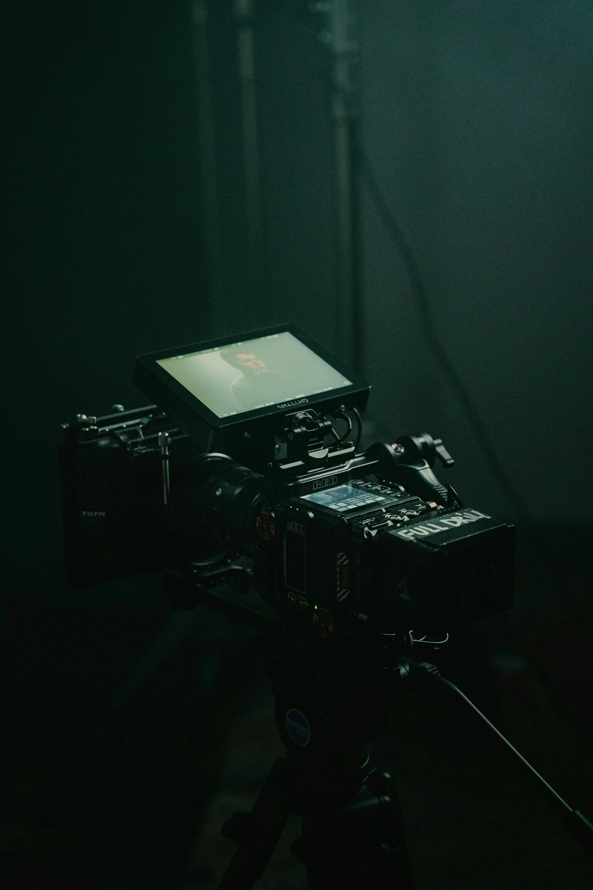
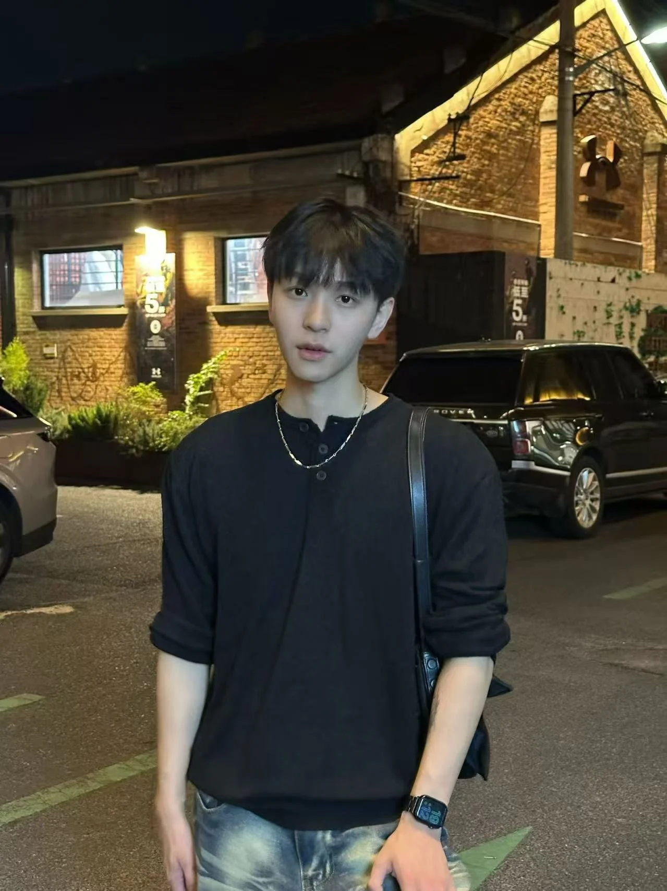

氛围参考图 · Oleg Brovchenko / Unsplash01 / SELECTED PROJECTS
把想法，
变成画面。
从品牌商务到旅行文旅，
让内容在不同场景里成立。
暂无此分类的项目。
项目经历由本人提供；图片来源见案例详情及页脚。
更多合作与执行经历
品牌与休闲体验
本田 · 五菱星光 · 智选假日酒店 · 知香缘高端线香
宁波方特 · 无锡融创 · 昆明海趣花都海洋世界 · 阳澄半岛乐园
现场与保密项目
2022 进博会 · 2023 ChinaJoy · 能源展 · 家居展
另参与综艺相关及电音巡回演出项目，具体项目资料不公开。

REN TIANXIAO / 任天笑02 / BEHIND THE WORK
你好，
我是任天笑。
短视频编导 · 制片统筹 · 内容制作
拥有 5 年内容制作与编导经验，工作覆盖选题、脚本、拍摄、后期及 IP 运营。参与艺人人设、旅行文旅、品牌商务和直播带货内容，熟悉从策划到成片交付的流程。
既能投入具体制作，也能协调团队、拍摄现场与交付节奏，让内容从想法走向落地。
内容团队统筹经验
旅行账号 8 个月累计获赞
信息流月消耗规模
数据依据简历自述，分别对应不同项目；信息流消耗为投放规模。
工作经历EXPERIENCE
- 2026.08 — 至今
杭州必胜文化传媒
短视频编导
艺人人设、创意脚本与拍摄执行；覆盖旅行、颜值口播、生活 Vlog 与信息流内容。
- 2026
上海奥润桥移民
新媒体主管
统筹 9 人团队，负责老板 IP 的脚本拍摄、直播 IP 运营与获客内容。
- 2025
个人合伙制作账号
短视频编导
负责旅行账号的星图商务选题、脚本、拍摄与发布；8 个月累计获赞百万。
- 2024.05 — 2025.09
上海岩煜文化传媒
新媒体主管
统筹 15 人内容团队，协调创意、拍摄、美术、后期与内容交付，参与片场 2ND.AD 工作。
- 2023 — 2024
上海雅佳森文化传媒
展会 PR
参与活动落地、现场布置、人员安排、协调与问题处理。
- 2021 — 2023
上海橙鳍文化传媒
短视频编导
负责脚本、拍摄、后期剪辑与调色。
TOOLS & CRAFT
创意，也要有执行力。
人设定位 / 创意脚本 / 分镜设计 / 片场统筹
相机操作 / 光影构图 / 剪辑 / 调色 / 数据复盘
DaVinci Resolve · Premiere Pro · Final Cut Pro · 剪映
EDUCATION
上海立达学院
传播与策划 · 2021.09 — 2024.07
主修传播策划，辅修导演创作
03 / LET’S MAKE SOMETHING
下一支作品，
一起开始。
艺人人设与账号内容 / 品牌商务 / 旅行文旅 / 拍摄与制作统筹